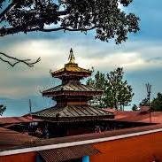
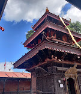
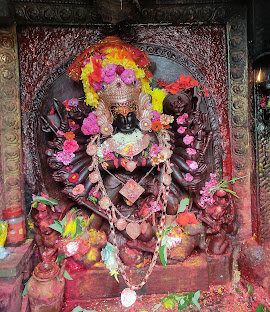

Palanchowk Bhagawati Temple
Introduction
Palanchowk Bhagawati is a revered Hindu temple located in the Kavrepalanchok district of Nepal. The temple enshrines the powerful goddess Bhagwati, an incarnation of Durga, worshipped for strength and protection.
Why Visit?

- Spiritual Peace: Prayerful ambiance and divine energy.
- Panoramic Views: Breathtaking hilltop vistas.
- Historical Value: Built during King Mandeva's reign (around 425 BS).
- Rich Architecture: Classic pagoda design and intricate stone carvings.
- Festivals: Dashain brings color, rituals, and celebration.
History
Built in the 5th century, the temple was commissioned by King Mandeva and Queen Vijaya Kamini. A legendary sculptor crafted the statue of Durga slaying Mahisasura, which remains one of Nepal’s most valued religious artifacts.
Getting There
- By Bus: ~$5–10 (1.5 hours)
- By Taxi: ~$40–60 (1 hour)
- By Private Car: ~$7–10 in fuel
Architectural Highlights
- Pagoda-style multi-tier roof
- Gorgeous stone and wood carvings
- Gajur (metal ornament) atop each tier
Religious Practices
- Daily worship & prasad distribution
- Special days: Tuesdays, Saturdays
- Animal sacrifices during major festivals like Dashain
Best Time to Visit
- Dashain Festival: Sept–Oct (most vibrant)
- Seasons: Spring (Mar–May) & Autumn (Sep–Nov)
- Avoid: Monsoon (June–Aug) due to slippery roads
Visitor Etiquette
- Dress modestly (cover shoulders/knees)
- Remove shoes before entering
- Respect photography restrictions
- Understand basic rituals (like tika, bell ringing)
FAQs
1. Can non-Hindus visit? Yes, all are welcome with respectful behavior.
2. How old is the temple? Built around 425 BS, over 1,500 years old.
3. What makes the statue special? Masterfully carved from black stone, showing Durga slaying Mahisasura.
4. Is it similar to other Bhagwati temples? Yes, but Palanchowk is more spiritually revered and visually unique.